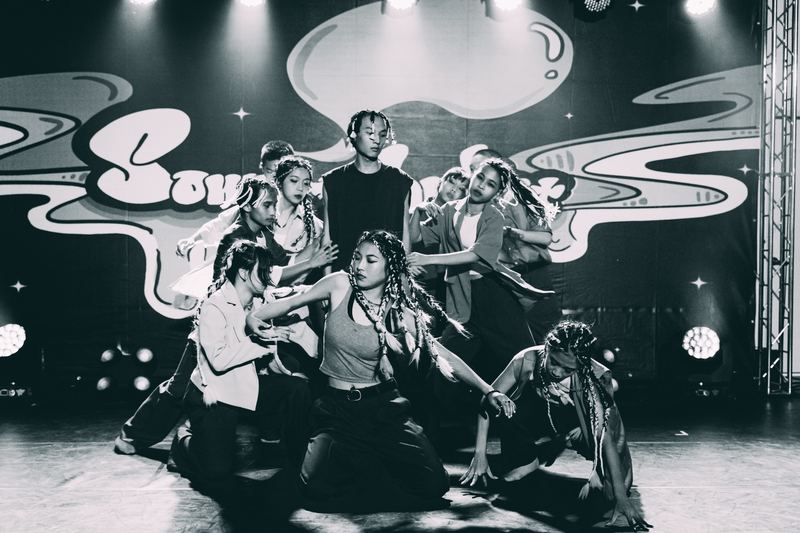
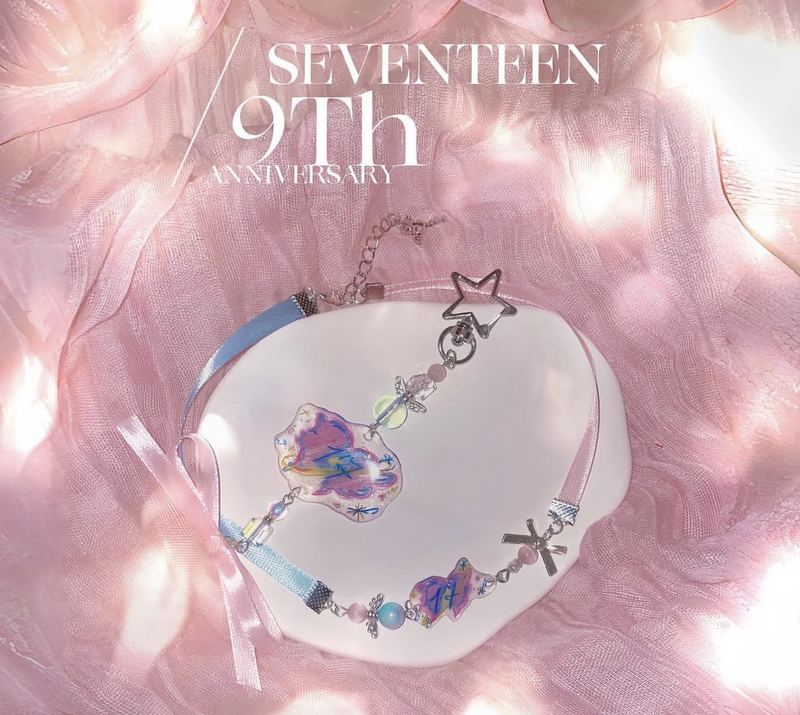

高中時期
熱舞社教學 ‧ 編舞與主排
擔任熱舞社教學，負責編舞並主排成果發表的表演。我習慣把複雜的動作拆解成清楚的步驟， 再依照每位社員的程度與狀況調整溝通方式，讓大家都能跟上進度。 這段經驗讓我培養出耐心與清楚表達的能力。
▶ 觀看成發表演影片Portfolio
「痴心妄想是強大的驅動力。」
我是個習慣把複雜的事拆解清楚、再用對方聽得懂的方式說明的人。 多年的街舞教學讓我很有耐心，也懂得依照每個人的狀況調整溝通方式； 經營自己的網路串珠店，則讓我養成主動負責、從頭到尾把事情做完的習慣， 也學會站在使用者的角度思考。我學得快、重細節，對自己做的東西有一份堅持， 也樂於接受回饋、持續調整。
HTML / CSS
JavaScript
街舞編舞與教學
手作設計

高中時期
擔任熱舞社教學，負責編舞並主排成果發表的表演。我習慣把複雜的動作拆解成清楚的步驟， 再依照每位社員的程度與狀況調整溝通方式，讓大家都能跟上進度。 這段經驗讓我培養出耐心與清楚表達的能力。
▶ 觀看成發表演影片
高中時期
一人包辦商品製作、出貨、客服溝通與網站經營。從頭到尾負責每個環節， 讓我養成主動負責、把事情做完的習慣，也學會站在使用者的角度思考， 思考顧客想看到什麼、怎麼買起來最方便。
▶ 查看網路商店 Instagram大一上學期
此為企業概論之實作專題，我負責客群定位與行程設計。 過程中我學會從顧客需求出發，並兼顧成本與團隊溝通， 真正體會課堂理論在實務中的應用。
▶ 查看專題 Instagram